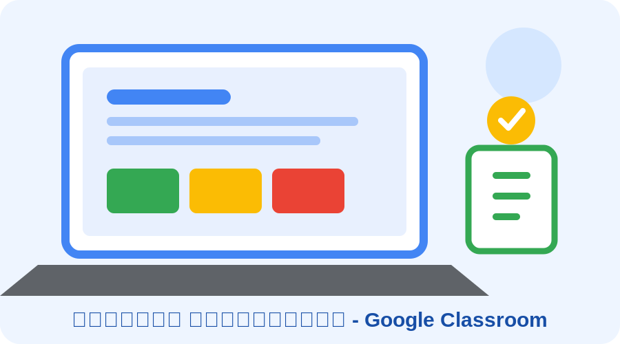

اسم الطالبة: مريم محمد فوزي عبدالحي
الكود الجامعي: 2502081
أصبحت التكنولوجيا جزءًا مهمًا من العملية التعليمية، حيث ساعدت الإنترنت على ظهور منصات التعليم الإلكتروني التي تتيح للطلاب التعلم والتواصل مع المعلمين بسهولة. ومن أشهر هذه المنصات منصة Google Classroom التي تساعد على تنظيم الدراسة والواجبات والاختبارات في مكان واحد.
Google Classroom هي منصة تعليمية من Google تتيح للمعلمين إنشاء فصول دراسية افتراضية، وإضافة الطلاب، وشرح الدروس، وإرسال الواجبات، واستقبال إجابات الطلاب، ثم متابعة الدرجات والتعليقات. ويمكن استخدامها من خلال الكمبيوتر أو الهاتف المتصل بالإنترنت.
تتميز المنصة بسهولة الاستخدام، وتنظيم الملفات والواجبات، وسهولة التواصل بين المعلم والطالب. كما تساعد على توفير الوقت وتقليل الاعتماد على الأوراق، ويمكن مشاركة المستندات والعروض والروابط التعليمية من خلالها.

| الوظيفة | استخدامها |
|---|---|
| الفصول الدراسية | تنظيم الطلاب حسب المادة أو المجموعة. |
| الواجبات | إرسال الأنشطة واستلام إجابات الطلاب. |
| التعليقات والدرجات | متابعة مستوى الطالب وتقديم الملاحظات. |
| مشاركة الملفات | إرسال المستندات والعروض والمواد التعليمية. |